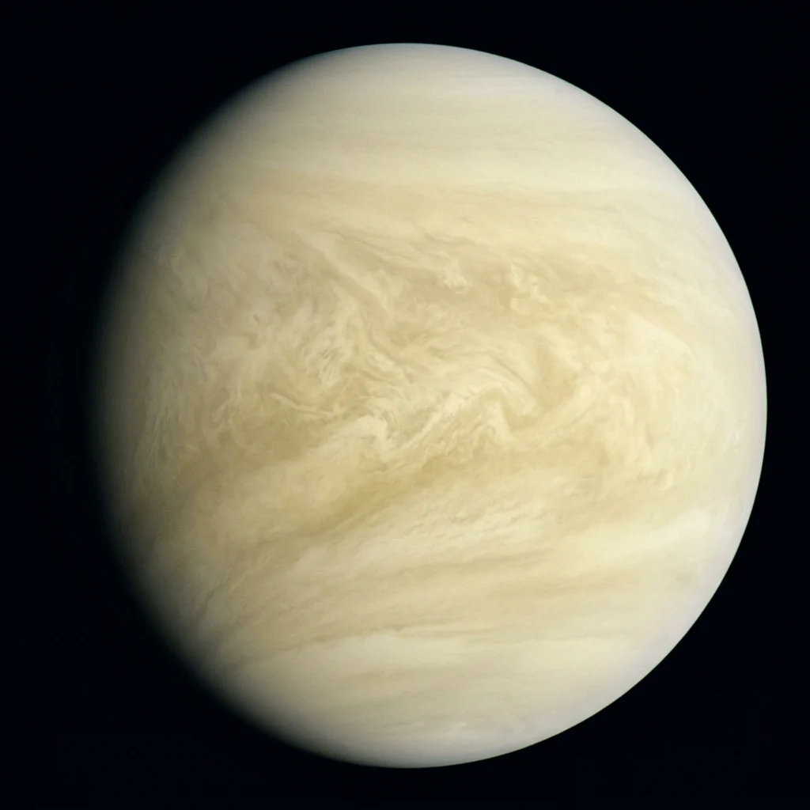

Maxwell Montes
Rising 11 km above Venus’s mean radius on Ishtar Terra, this radar-mapped mountain massif is taller than Mount Everest above sea level.
Solar system voyage · Stop 2 of 10
The bright clouds hide a rocky world. What you can see from orbit is not the surface a lander encounters.
0.72 AU from the Sun · mean distance, rounded
Investigate the sunlight
Spacecraft-inspired view. Images are not a live view; sizes and star positions are not to scale. Select an image to examine it with the class.
Predict first: move twice as far from the Sun. How much light reaches the same area?
distance from the Sun
sunlight per m², compared with Earth
one-way light travel from the Sun
1 AU ≈ 150 million km. Model: sunlight ∝ 1 / distance²; light takes about 8.32 minutes per AU. These are Sun-to-location values, not Earth-to-spacecraft communication times. Atmospheres, temperature, and orbital eccentricity are not modeled. NASA solar system reference · NASA planetary distance table.
Why is Venus hotter than Mercury even though it is farther from the Sun?
Distance is only part of the story. Venus’s thick carbon dioxide atmosphere produces an intense greenhouse effect.
Explain your answer using one observation from the image or lesson and one measurement from the sunlight experiment.
Planet Field Guide · Stop 2 · Terrestrial World
Almost identical to Earth in diameter and bulk density, Venus took a starkly different atmospheric path. Trapped under a choking carbon-dioxide blanket and global sulfuric-acid cloud decks, its volcanic plains bake at +465 °C—hotter than Mercury even though Venus sits nearly twice as far from the Sun.
Driving question: How can a planet with bright reflective clouds end up hotter than Mercury?
Interactive Lab · Atmospheric Descent Probe
Drop a probe from the upper haze (70 km) down to Venus’s volcanic plains (0 km). Notice the surprisingly temperate cloud deck at 50–55 km—then watch pressure and greenhouse heat soar below it. Toggle the greenhouse switch to compare actual Venus with a bare-rock model.
—
Interior & Atmosphere
Explore the internal layers and thick atmospheric blankets that shape Venus.
Surface & Sky
Rising 11 km above Venus’s mean radius on Ishtar Terra, this radar-mapped mountain massif is taller than Mount Everest above sea level.
While the solid globe spins backwards once every 243 days, upper cloud decks whip around the planet in just 4 Earth days driven by solar-heated winds.
Radar mapping reveals tens of thousands of shield volcanoes, pancake domes, and vast lava channels covering ~80% of the surface.
Spacecraft Exploration
Check Your Understanding
1. Why didn’t spacecraft cameras see Venus’s volcanoes from orbit using visible light?
Choose an answer.
2. Which gas is primarily responsible for trapping infrared heat on Venus?
Choose an answer.